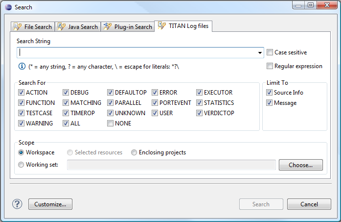
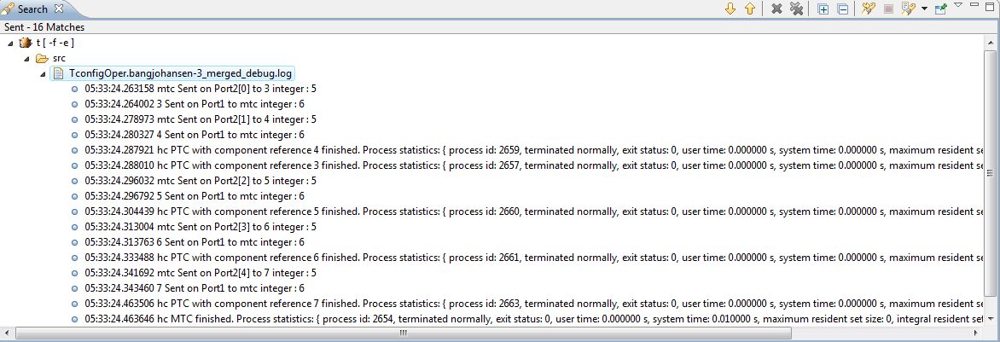

Searching in TITAN Log files
Using The TITAN Log Search funtionality the user can easily find the log records, matching the given search pattern.
To open the search page select the menu option Search/TITAN Log files, or use the key combination: CTRL+H. The following window appears:

Defining the search criteria
-
Search String
Enter the intended search string or regular expression. String/regular expressions of previous searches can be loaded using the drop-down menu of the textbox.
To search for regular expressions tick the "Regular expression" checkbox.
Information on regular expressions can be found on this site.
-
Search For
Select the events to search for.
-
Limit To
The "Source Info" and "Message" buttons specify which part of the log record will be matched. There is a logical OR relation between the two fields.
-
Scope
The scope of the search is defined as:
- Workspace - all projects and files in the workspace are included in this search
- Selected resources - only the selected resources are included in this search
- Enclosing Projects - the projects enclosing the currently selected elements
- Working Set - only resources that belong to the chosen working set are included in this search
The search result
The result will appear in the default search view. Clicking on a search match shows the selected record in the TextTableView
and Details View

Toolbar
The toolbar in the Search view contains the following buttons:
- Show Next Match - This command shows the next match in the TextTableView, opens the view if required.
- Show Previous Match - This command shows the previous match in the TextTableView, opens the view if required.
- Remove Selected Matches - Removes all selected matches from the search results.
- Remove All Matches - Removes all search result form the search view.
- Expand all - Expands every tree item in the search view.
- Collapse all - Collapses every tree item in the search view.
- Run the Current Search Again - This command reruns the current search again, so that removed search results reappear or changes are reflected.
- Cancel Current Search - Cancels the current search.
- Show Previous Searches - This command allows you to browse previously conducted searches and repeat a previous search. You can select a previous search from the drop-down menu or clear the search history.
- Pin the Search view - Pinning the search view means that subsequent searches will shown their results in another search view and that the pinned view remains unchanged.